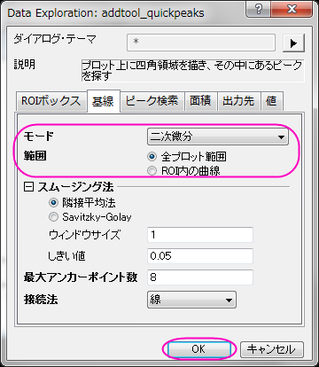
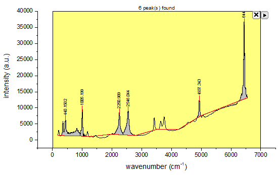
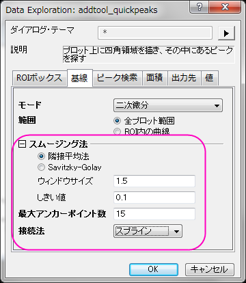
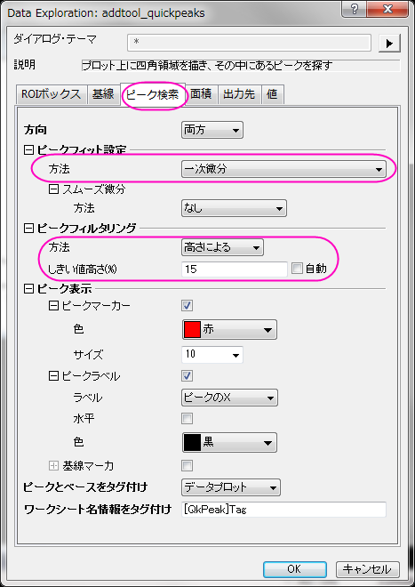
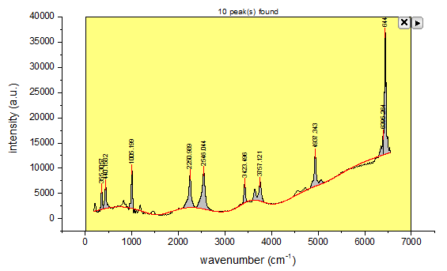
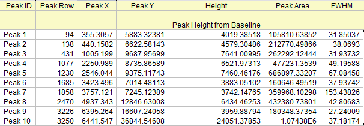
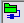
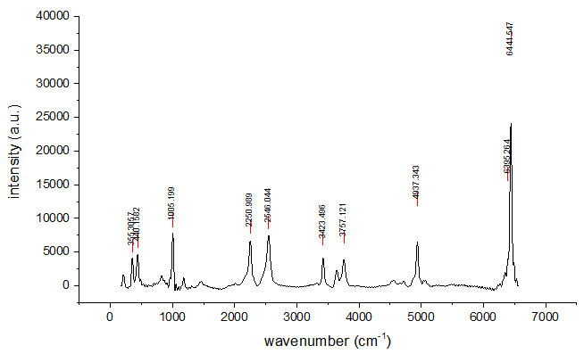

クイックピークガジェット
Quick-Peak-Gadget
概要
クイックピークガジェットはROI(Region of Interest, 関心領域)内でのピーク検索、基線の減算、ピークの積分、フィットを実行できます。また、ピークアナライザと連携することもできます。詳細はこのチュートリアルを参照してください。
必要なOriginのバージョン: Origin 2015 SR1以降
学習する項目
このチュートリアルでは、以下の項目について解説します。
- クイックピークガジェットでスペクトルのベースラインを検索し、減算する
- クイックピークガジェットを使用してグラフ内のピークを検索する
- 初期設定をカスタマイズする
ステップ
- 新規ワークブックボタン
 をクリックして、新しいワークブックを作成します。ヘルプ: フォルダを開く: サンプルフォルダを選択して、サンプルフォルダを開きます。このフォルダ内のSpectroscopyサブフォルダにあるZircon.dat ファイルを探します。空のワークシートにファイルをドラッグアンドドロップしてインポートします。
をクリックして、新しいワークブックを作成します。ヘルプ: フォルダを開く: サンプルフォルダを選択して、サンプルフォルダを開きます。このフォルダ内のSpectroscopyサブフォルダにあるZircon.dat ファイルを探します。空のワークシートにファイルをドラッグアンドドロップしてインポートします。
- 列Bを選択して、2Dグラフギャラリーツールバーの折れ線
 ボタンをクリックして折れ線グラフを作図します。
ボタンをクリックして折れ線グラフを作図します。
- Originメニューからガジェット：クイックピークを選択し、クイックピーク：addtool_quickpeaksダイアログボックスを開きます。
- 基線タブを開き、モードを二次微分にし、範囲を全プロット範囲に変更します。OKをクリックして、適用します。

- 黄色いROIボックス内のピークが検出され、マークが付きます。ROIボックスのサイズを変更して、グラフ内のX範囲が[0,7000]の部分を囲みます。ベースラインとピークの検索のために設定を変更する必要があるようです。

- 三角形のボタンをクリックして、メニューから設定を選択し、基線タブのスムージング法の項目を次のように調整します。

適用をクリックして適用し、ピーク検索タブで値を調整します。

- OKをクリックして設定を適用し、ダイアログを閉じます。しきい値と最大アンカーポイントを変更したことで基線が、しきい値高さを変更したことでピークがうまく検出されたのがわかります。

- 三角形ボタンをクリックして、メニューから新しい出力を選択するとピーク検索の結果がレポートシートに出力します。
もう一度三角形ボタンをクリックして、レポートシートに行くを選択すると、出力ワークシートを確認できます。

- ガジェットを適用したグラフウィンドウをアクティブにして、三角形ボタンをクリックし、基線の減算を選択します。確認メッセージはOKをクリックしてデータからベースラインを減算します。
- Note: 基線を減算した後にワークシートを確認しても何も起こらない場合は、データが接続によってインポートされています。この場合、ワークシートの左上隅にある緑色のアイコンをクリックし、インポートしたデータのロック解除またはデータコネクタを削除をクリックする必要があります。その後、基線を再度減算します。
- 右上隅の×ボタンをクリックして、ガジェットを閉じます。最終的なグラフは下図のようになります。

Note:フィット時の詳細設定を行う場合はクイックピークガジェットとピークアナライザを組み合わせて使用します。